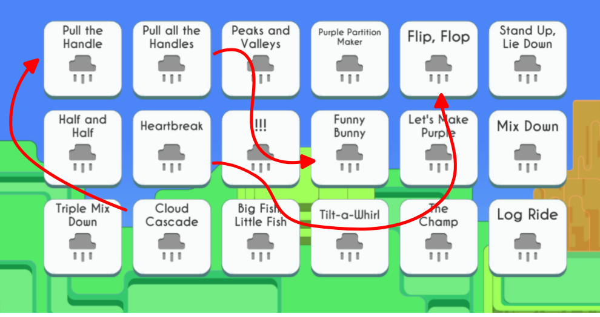

Implement
Incorperating user test results
And with that, we made a few more changes before our v1 release. While there were more issues presented in the user test that are not talked about, we specifically wanted to focus on realistic changes that could be finished in 1 sprint before code freeze.
Add a hover state and more color so that students know what is and isn't clickable. Removed color from the unclickable lines

Change the order and add additional levels so that the game is longer and moves at a slower pace.
Add more worlds with similar art styles
Next steps & reflection
Since the last round of user tests was focused on specific changes that were realistic to make before the release, another round of user tests were conducted to better evaluate potential features to increase engagement.
Additionally, we now had quantitative data for us to sort through. The next step is to use the quantitative data to determine next steps. Particularly, many students fail levels frequently, which is an indicator of guess and check behavior. The next user test may investigate why this is happening.


 While the ghost lines interaction was difficult, the visualization was strong. We removed the interaction all together and incorperated the visuals into the main game.
While the ghost lines interaction was difficult, the visualization was strong. We removed the interaction all together and incorperated the visuals into the main game.